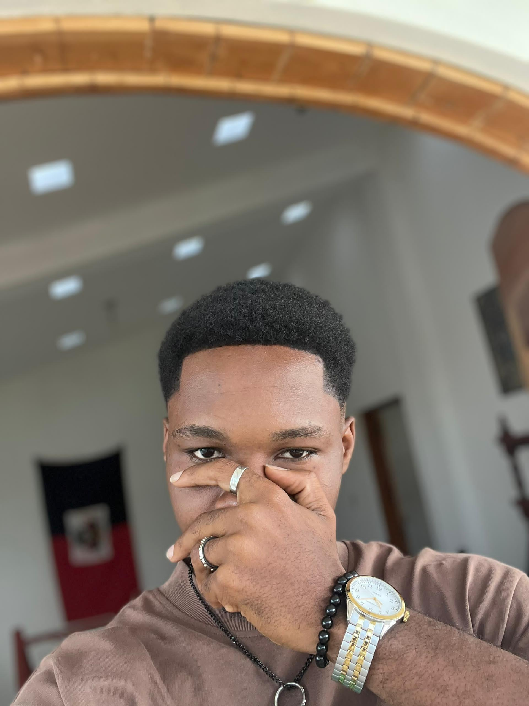

À propos de moi
Je m'appelle Wolf, un passionné de technologie, de design et de programmation. Depuis mon plus jeune âge, je suis fasciné par l'univers numérique et les possibilités infinies qu'il offre.
J'aime transformer des idées en projets concrets et fonctionnels, que ce soit à travers la création de sites web modernes, d’interfaces utilisateurs attrayantes ou encore le développement de fonctionnalités interactives.
Curieux et motivé, je suis constamment en quête de nouvelles connaissances et de défis pour améliorer mes compétences. Mon objectif est de concevoir des expériences numériques qui allient esthétique, performance et utilité.
Expériences Professionnelles
Développeur Web
- Création de sites web vitrines et portfolios responsives avec HTML, CSS, JavaScript.
- Développement de mini-applications avec gestion d'utilisateurs et localStorage.
- Intégration d’API (citations, images, météo) dans des projets JavaScript.
Stagiaire en Développement
- Participation à la refonte d'une application Django (authentification, vues, base de données).
- Collaboration avec une équipe Agile sur GitHub et Trello.
- Support technique et documentation utilisateur.
Compétences
- HTML5 / CSS3
- JavaScript (DOM, API, localStorage)
- Python & Django
- Responsive Design
- Git & GitHub
- Utilisation d'API REST
- Base de données : SQLite / MySQL
Langues
- Français –
- Créole –
- Anglais –